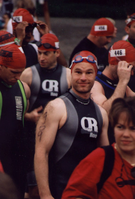

This report describes my first triathlon, but I begin with my first road race. Jeff started me down this slippery slope.
It is early 1995. Jeff, Sean, Alex and I head to the field house and jog a few times a week. We are young, untenured, and in varying states of physical fitness. Jeff talks me into running a road race. I haven't the faintest idea what is involved. Jeff lays out the basics: We show up, jog for a while, and then have a nice brunch with several hundred of our newest friends. It is a surprise to discover that for the vast majority of participants, winning has very little to do with road races. Very few road racers ever think seriously about coming in first. Most compete against PRs, or personal records, and occasionally against some friends. Road racing is a social activity.
Jeff mentions minor issues, such as getting my mileage up to the point that I can reasonably expect to finish the race. Later, I come to understand that Jeff's description omits a great deal. Jeff suggests the Reston 10-Miler as a fine first race. I do not question this choice; rather, I applaud it. There are good reasons to start with a shorter race. I discover one such reason directly:
Excitement is high; hundreds of runners packed full of glycogen have that effect. After a half mile or so, Jeff suggests we slow down. What! Why would we want to go slow in a road race? Pacing is an abstract concept, and I feel good. Jeff says he will see me later, and he certainly does, along about the 8 mile mark. The image is still fresh in my memory. He trots on past, chatting amiably with a pretty woman. I feel like I am going to die. I keep myself going with the thought, "I WILL finish." I do, barely. I am in agony.
No other run has ever left me feeling that bad. On the positive side, despite the excruciatingly slow final miles, I meet my goal of finishing under an hour and a half. Later, I conclude, somewhat irrationally, that I like the experience.
A year and a half later, my physical condition hits bottom. I injure my knee by running farther than my legs are conditioned to go. While driving to my office one Sunday morning to work on a grant proposal - an ultimately unsuccessful grant proposal, I am sorry to report - I hear WMAL broadcast the start of the 1996 Marine Corps Marathon (MCM). I am a sorry case. I can't run a half mile without knee pain.
I resolve to adjust my priorities. First, Sunday mornings henceforth belong to me, and not to the office. Second, I will train for and run the 1997 MCM. All decisions have consequences, but I do not regret either of these decisions.
Despite 15 years of recreational running, I know almost nothing about training. Fortunately, I am prepared to learn. Most of what I learn comes out of books, although I find the Net helpful as well. Each author contradicts the others to some degree, but as an academic, I am used to that. Alternate bouts of reading and experimentation gradually yield a primitive understanding of what works for me.
Since my knee can tolerate biking, I ride the stationary bike at the field house three times a week for the remainder of the fall. I cautiously run very short distances on the track. On Christmas Eve, I run outside for the first time since my injury: 5 miles with no problems. With an introduction from Jeff, I start lifting weights, and am stunned at how well the lifting protects my legs.
I try yoga stretches in a running book that Becky gives me for my birthday, and my flexibility increases dramatically. When I start, I cannot touch my toes. Indeed, I am barely able to touch my shins. Two months later, I can place all five digits on the floor and leave them there as long as I like. By the time the 1997 MCM rolls around, I have dropped 35 pounds and feel terrific. I finish the marathon in just under 4 hours.
I am hooked, and, like all addicts, I want to hook someone else. I invite Bert to train for and run a marathon with me. Bert is an easy mark. Bert is contemplating two-wheeled toys, namely Harley Davidson and BMW motorcycles, but agrees to marathon training instead with indecently little resistance. We select Grandma's Marathon, which happens to take place in Duluth Minnesota on the eve of the 1998 summer solstice. It will certainly be a long day. I look forward to crossing the finish line with Bert.
In spring 1998, Matt starts swimming lessons. I have spent many hours in Deep Creek Lake sailing, skiing, and simply goofing off. Consequently, I am very comfortable in the water. However, I have never swum seriously. Swimming quickly from one point to another is simply not one of my skills. Crawling is an abstract concept practiced by swimmers, of which I am definitely not one. Unfortunately, completing a triathlon requires swimming.
Becky and I swim laps on the days that Matt has his lessons. On the day I decide I can complete 1500 meters in less than the disqualification (DQ) time, I send in my application for the Columbia Triathlon. Now the pressure is on. DQ avoidance is one thing; dork avoidance is quite another. Limping along with a sidestroke while everyone else swims 3 times as fast with a legitimate stroke is not an appealing prospect. I do not want to identify my bike at the transition by the fact that it is the only one left. It is time to learn to swim.
It is depressing to get into the pool, crawl for 25 yards, and be left gasping for air. How could I be in good enough shape to run a marathon, but not good enough shape to swim 25 yards without winding myself? I start reading about swimming, and discover that technique is everything. Am I ever in trouble!
Becky arranges a lesson. Angie is quite good. Not only is she helpful, but she manages not to laugh out loud. She even scolds Becky for laughing, although she stops scolding when Becky mentions that sometimes I run backwards when Becky and I are out together. I make a mental note not to do that anymore.
Becky swims well. She is training for a sprint triathlon. The problem for Becky is running; her knees simply can't tolerate very much. Becky volunteers that, yes, she is happy to have found a physical activity where her talent surpasses mine. We studiously try not to compete, but human nature is difficult to suppress.
I decide to reorganize my training. Despite the fact that I am preparing to run Grandma's Marathon with Bert, I can no longer afford to run 6 days a week, totaling up 35 to 40 miles. I start cautiously. I shift Mondays from a 5 mile easy run to a swim workout. I do not count laps or measure time per lap. I concentrate on drills and form. I am pathetic.
When I focus on balance, my kick drags me backwards. When I focus on kick, I forget to breathe. When I accidentally piece together two smooth strokes, I forget that I am in a pool and slam my head into the wall. Thirty minutes in the pool leave me exhausted, even though I spend half the time hanging onto the edge gasping for air. The exhaustion persists throughout the day. I fervently wish for any signs of progress.
Signs of progress arrive more quickly than I have any right to expect. I acquire the sensation, probably illusory, but satisfying, that I am actually swimming. I advance from incompetence to mere inferiority. I am delighted. I alternate crawl laps with backstroke, and discover that I can swim 100 yards, then 150, and then 200 without stopping. I obviously cannot cover 1500 meters properly, but with two months to go, I can see the light at the end of the tunnel.
Becky and I buy the Total Immersion (TI) text and drill book for fishlike swimming. The drills certainly look odd. A lifeguard at the pool finds them amusing. But they feel right. The idea is to disassemble the crawl stroke and practice each part all by itself. The focus is on balance, which leads to reductions in drag. Stomach and back balance is easy. Side balance is trickier. What is weird is that when unbalanced, you sink below the surface; when balanced, you float on top. Through direct experimentation I verify the difficulty of breathing when unbalanced. I alternate drills with 200 yard swim sets.
One day, my body decides that it can swim aerobically. A similar transition happened long ago with running, but I had forgotten the sensation. One day, each step is a struggle; the next, running feels easy. In the pool, instead of each additional stroke being an effort, suddenly I feel like I can crawl indefinitely. The magic happens just in time, a mere two weeks before Columbia.
One of the interesting aspects of training is that it occasionally suggests an attractive model for the rest of life. There is plenty of time to mull over such models during low intensity workouts, which form the bulk of typical training schedules. Swimming balance is a great example.
It isn't hard to spot the unbalanced swimmers at the pool; it hurts simply to watch them. It isn't hard to spot who is leading unbalanced lives; similar criteria apply. A balanced life provides for accomplishment without wasted effort. As TI guru Terry Laughlin says, `You're swimming fine.' So, how to balance life?
Perhaps drills can help. Swimming drills reduce drag. Possibly life drills reduce stress. Bookstores overflow with stress reduction prescriptions. The trick is to practice them.
I am extremely fortunate. My professional life gives me the luxury of working on my terms. If Matt wants to spend a few minutes reading Green Eggs and Ham in the morning, I can do that without worrying about being late. If it is a nice spring day, and I want to pick Matt up early, I can usually do that too. My office will still be there. At the end of the year, of course, I must assess my research, review my teaching, consider my service, and thereby justify my position, but the day to day scheduling belongs to me. Currently my `drills' revolve around my family; I simply spend time with Matt and Becky. This sounds easy, and, for me, it is because Becky is practicing the same drills. My observation is that such simple drills are, in fact, quite difficult for many people.
I analyze the 1997 Columbia results, and decide that a reasonable goal for me is to finish seven eighths of the way back in the swim. For me, this is significant advance. I am now confident I will not be the very last one out of the water at Centennial Park. In fact, I hope to beat the 50 minute DQ limit by 15 minutes. Put more brutally, I expect that the fastest swimmer will not be more than twice as fast as I am.
A triathlon has a bike leg too. How hard can this be? I take my antique Specialized out on the W&OD trail. I find that a focused ride averages about 16mph, and the best I can do over an eight mile sprint is 19mph. I check the results from the 1997 Columbia: a middle of the pack biker takes less than 1:20 to cover 41K, which works out to just over 19mph. Ouch! My short sprint pace is less than what the median triathlete is doing over the entire course. Clearly, my biking needs some serious attention as well. May 17 is not nearly far enough away.
I decide to use Becky's Miyata instead of my Specialized. The Miyata is too big for me, and it is even older than the Specialized, but it was a very good bike in its time, and I can ride it much faster than my bike. Neither of our bikes has had any maintenance in years. The last time I personally changed a tire, I was a teenager. Becky signs me up for a bike maintenance course at the local community center. Ultimately, the course cancels out due to low enrollment, but with some tips from the local bike shop, I start tinkering with the bike between short training rides.
I analyze the 1997 Columbia bike and transition times. I know how fast I can run, even when tired, so I ignore the run times. I arrive at an overall goal of three hours for the triathlon. Although the event winner will finish over an hour earlier than that, three hours would be a more than satisfactory outcome for me. I decide I can do it.
It is better to be lucky than good. Being good tends to beget luck, I think because less luck is necessary. Nonetheless, no one is good all the time. Sooner or later we each make our mistakes, and then luck is a very desirable commodity indeed.
Three weeks before the triathlon, I crash the Miyata. I do not recommend the experience. On a beautiful Saturday I decide to put in some bike miles and skip the running. I take the W&OD Trail out past Ashburn, around some of the back roads, and then head for home. I feel great.
Although I time most of my runs, I rarely use my stopwatch for bike sessions. This Saturday, I am not even wearing my watch. Being in a hurry on a bike is dangerous on the trail. Not only are there the usual hazards, such as cars at road crossings, but many trail users are oblivious to their surroundings. Children are the obvious hazard in this regard, but a surprising number of adults do not pay attention either. It is quite common to have someone step directly into your path. In addition to an audible warning, I make a conscious effort to plan evasive action each time I pass someone. Usually, this simply means dropping a few miles per hour or readying my fingers on the brakes.
Although the trail is crowded this Saturday, I move along at a good clip between packets of congestion. On a slight downhill, I pass a rollerblader and then cut back to the right hand side of the trail. I cut just a little too far. Most of my bike experience is at the speed of a casual user. However, I am in better shape than ever, and my bike speed has increased correspondingly. I am about to learn that my bike handling skills have not kept pace.
For a few seconds, I balance on the edge of the pavement. Then the wheels drop down into a soft, muddy ditch. I retain control long enough to think, for one brief instant, that that I might actually stop safely. High grass fills the ditch. Post mortem analysis reveals large rocks as well. The front wheel stops, and, in accordance with Newton's Laws, I retain my momentum of twenty something miles per hour times my body mass.
Helmets are impressive devices. I do not like to think about the condition I would be in had I not been wearing one. I land squarely on my head, then flip over onto my back side and slide to a stop, still in the ditch. I find myself propped up on my elbows as I watch the bike sail down the trail and force an oncoming rollerblader off the pavement.
Three people witness the accident and stop to help me. Each of them looks at me as if I should be seriously injured, and possibly dead. It is a surreal moment. We share brief thoughts about guardian angels. I assure them that I am OK, and after a quick inspection, climb back on the bike. Today, I am obviously not very good, but I am very, very lucky.
The crash leaves me with a mild concussion, but other than that, not a scratch. My quick inspection overlooks that the derailer and its mounting to the frame absorbed the energy of the bike's deceleration. My first attempt to shift gears reveals this oversight. I call Becky from Smith's Station and tell her that I have wrecked her bike in some poison ivy, and that I need to be rescued. On the phone, I omit the part about landing on my head. That story can wait for later. I coast for a while, but soon what is left of the derailer flips over against the wheel. I carry the bike to Route 28, where Becky and Matt pick me up. I take the Miyata to the bike shop, where Hans straightens out the frame and installs a new derailer.
The day before the race, Becky and I drive up to collect my packet, take the bike to the transition area, drive the bike course, and finally sit in on a well run information session. Some of the race director's slides illustrate basic triathlon rules, particularly bike position rules: stay to the right unless passing, don't cross the center line, and don't draft. This sounds simple, and the next day it proves to be simple, although it is clear that some athletes skipped the meeting.
Packet pickup varies slightly from road races. For one thing, there is more to pick up, such as a swim cap and an extra race number for the bike. Booty crams the goodie bag: water bottle, coffee mug, lace locks, refrigerator magnet, bumper sticker, bandaids, Power Bar, tee shirt, and Endurox. The Endurox goes into the trash; I am not about to start using performance enhancing compounds. The tee shirt sports a design that appears to be being sucked into a black hole. I suppose some of the triathletes might actually like it; there are nearly a thousand of us, after all.
Sunday morning, Becky and I leave our house at a leisurely 5:30. It is early enough, but just barely. Next time I definitely want more time. I take my gear down to the transition area: a bucket with water to wash the sand off my feet, helmet, shades, bike gloves, sunscreen, goofy hat, shirt with race number pinned on, running shoes and socks, two bottles for the bike - one water, one Gatorade, 4 packets of GU, tape to attach the GU to the top tube, and a towel. I am using running shoes on the bike, so cycling shoes are not on the list.
After I lay my gear out, I start back up to meet Becky. As an afterthought, I go back and check my tires. Back tire - fine. Front tire - completely flat. I am annoyed; I think that someone has let the air out. It turns out that there is a very small leak; enough to drain the tire in about a half day. To save a CO2 cartridge, I carry the tire back up to the car, where Becky helps me pump it up. It seems to hold air, so I do not change the tube. I carry the hand pump back down to the transition area. I do not have any trouble with the tire on the race. Back at the house, I discover that some spokes have chewed their way through the rim strip. I replace the rim strip and resolve to do more preventive maintenance on the bike. 
I can't afford too much time to think about the tire. It is time to get the wetsuit on and make my way to the swim start. I join up with my wave, and the announcer hustles us into the corral. Becky waves and gets a kick out of my silly grin.
We start. I am excited, so excited that I forget to start my watch. I do not think to start my watch at the end of the swim, at the beginning of the bike, or at the end of the bike. Finally, at the start of the run, I am back on familiar ground and I remember my watch. Fortunately, the race organizers keep track of the splits.
The water is cold, but nothing like Deep Creek Lake. Still, between the excitement and the cold, I cannot stroke smoothly, and I find myself out of breath and on my back in short order. Navigation is also a trick. Sadly, there is no line marked on the bottom of Centennial Lake, and each time I lift my head to sight a course marker, I find that I am pointed well off course.
Two thirds of the way around the course I calm down. I find my crawl stroke, such as it is, and make my way to the finish. I learn later that my swim split is under 32 minutes, which greatly exceeds my goal.
I scamper up the long grassy ramp to the transition area. I struggle out of my wetsuit and prepare for the bike. I check the tires; both are fine. I dress myself in a complete jumble. I desperately need to practice transitions. I pick up my helmet, then set it back down. I pick it up again, put it on, and then remember my shirt, which is still on the ground. Fortunately, the shirt goes over the helmet. By the time I am done, my transition time is almost 6 minutes, which is about twice the time used by the rest of the field. Finally, I am ready to ride.
A few yards out of the transition area, I hear a loud bang. The biker just in front of me has blown his front tire, probably a pinch flat from a hasty repair prior to the race. The biker has little speed, and he fails to unclip before the bike goes down. I zig around him as he crashes to the pavement.
The incident helps me start cautiously on the bike. I am conscious of my bike's age and my limited bike training. Many of the other riders sport impressive looking trikes. Still, most of the fast riders are many miles in front of me, and I find that the bike is more than adequate for my needs in this part of the pack. I pass significantly more riders than pass me, particularly on the uphill sections, of which there are plenty. I watch in astonishment as the leaders pass by going the other way. Wow! They look, and even sound, as if they are on motorcycles.
I am conscious of the heat and make a concerted effort to drink. I spill Gatorade all over the bike and myself. I note that the bike will need Simple Green and a hose job when I get back to the house. I am well on my way to being plenty dirty myself. Fortunately, Becky has brought towels for me to sit on during the ride home.
I retrieve GU from the top tube and squirt it down - Yum! Although I see gel packets littering the course, I do not want to add to the mess. I hit upon the bright idea of stuffing the mostly empty GU packets into my shoe, where I will rediscover them - not in the transition, of course - but on the run. The shoes will need the washer when I get home.
I shout my appreciation to the many volunteers out on the course. I warn bikers as I pass, and I offer encouragement to bikers as they pass me. The vast majority of the bikers are courteous and know what they are doing. I do not see any blatant drafting, but I do encounter the occasional blocker who simply doesn't understand where to ride.
By the end of the bike split I am giggling and grinning from ear to ear. This is fun! I blast through the second transition, stopping just long enough hang up my bike, switch the helmet for my goofy hat, squeeze down a GU, and take a very long drink from my water bottle. From outside the transition area, Becky watches me drink and thinks it is too much at once. As I am about to discover, she is right.
I start the run. I am very pleased with my bike split, and I anticipate an excellent run. My brick training leads me to expect to feel good within a mile or so. Instead, my overfull stomach, combined with the heat, makes me nauseous. I am forced to slow down, and at the three mile mark I am shocked to record a 9:15 mile, a pace that is 2 minutes a mile slower than I expect to be running.
This day, in this heat, with this stomach, I simply cannot run any faster. I actually stop and walk for a minute or so, something I have never done, not even in the debacle of my first road race. The break helps, and I manage to finish the run, but at a pace significantly slower than a typical easy training jog. I am very glad to cross the finish line.
Becky greets me and helps me find a shady spot to stretch. She watches me for signs of heat exhaustion, but does not seem concerned. After a quick dip in the lake, I feel much better. Just before we head up to the post race party, we see the medics rush a triathlete into a waiting ambulance. She screams, shouts, and carries on. Another triathlete and the medics try to calm her down. We have no idea what is wrong. It is a disturbing sight. The doors close, and the ambulance drives off.
I eat pasta and bagels, and we watch the organizers hand out some of the prizes. I see Hans from the bike shop, and I shake his hand and tell him that his repair job on the Miyata proved excellent on the bike leg. We collect the gear from the transition area and head home. The problems on the run do not worry me; I am sure I can solve them. Overall, I am extremely satisfied with the day. I am a triathlete!
Swim (1.5K): 31:52
Bike (41K): 1:21:01
Run (10K): 52:34
T1: 5:44; T2: 1:19
Total: 2:52:27. I know that it doesn't add up exactly; ask Lin-Mark, not me.
You may wish to visit the home page for the Columbia Triathlon.
| Top | Home page |